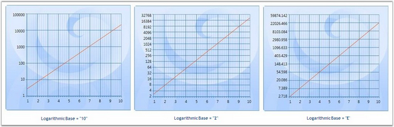
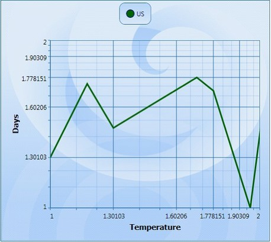
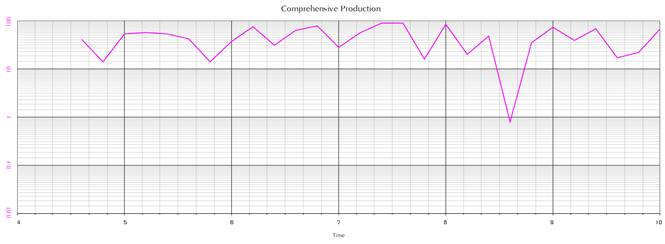

Logarithmic values can be applied to the Chart. This is facilitated by the IsLogarithmic and LogarithmicBase properties. On setting the Axis.IsLogarithmic property, the Axis range, interval and padding will be plotted as per the log values provided. The LogarithmicBase value allows to set the base values for Logarithmic Axis.
|
[C#]
// Add Data points to Chart ChartListData points = new ChartListData(); for (int i = 1; i < 11; i++) points.Add(new ChartPoint(i, Math.Exp(i))); series.Data = points;
// Set the IsLogarithmic property of the Axis as true area.SecondaryAxis.IsLogarithmic = true;
// Set the Logarithmic Base value as 10 area.SecondaryAxis.LogarithmicBase = 10;
// Set the Logarithmic Base value as 2 area.SecondaryAxis.LogarithmicBase = 2;
// Set the Logarithmic Base value as e area.SecondaryAxis.LogarithmicBase = Math.E; |
The following image illustrates Log chart with various LogarithmicBase values.

Figure 194: Chart with Logarithmic Values
Show Minor Grid Lines When the Axis Is Logarithmic
Essential Chart WPF is enhanced with minor grid lines and ticks when the axis is set as logarithmic.
Adding Show Minor Grid Lines
Add Show Minor Grid Lines, by using the following code.
|
[Xaml]
<syncfusion:Chart Name="Chart1" Grid.Row="1" Margin="10"> <syncfusion:ChartArea Name="area" > <syncfusion:ChartArea.PrimaryAxis> <!--X axis declaration with required property settings--> <syncfusion:ChartAxis Header="Year" IsLogarithmic="True" EnableLogLabels="True" > </syncfusion:ChartAxis> </syncfusion:ChartArea.PrimaryAxis> <syncfusion:ChartArea.SecondaryAxis> <!--Y axis declaration with required property settings--> <syncfusion:ChartAxis IsLogarithmic="True" EnableLogLabels="True"> </syncfusion:ChartAxis> </syncfusion:ChartArea.SecondaryAxis> </syncfusion:ChartArea> </ syncfusion:Chart> |
|
[C#] Chart1.Areas[0].PrimaryAxis.IsLogarithmic = true; Chart1.Areas[0].PrimaryAxis.EnableLogLabels = true;
Chart1.Areas[0].SecondaryAxis.IsLogarithmic = true; Chart1.Areas[0].SecondaryAxis.EnableLogLabels = true; |
When the code runs, the following output displays.

Figure 195: Minor Grid Lines When the Axis Is Logarithmic
The following table contains the property Details.
Table 138: Property
|
Name of the Property |
Description |
Type of the Property |
Value It Accepts |
|
EnabelLogLabels |
Set /unset the log labels |
Dependency Property |
Bool (true or false) |
See Also
Essential chart allows user to set the minor grid lines for log axis.
Table 139: Property Table
|
Name of the Property |
Type of the property
|
Value it accepts
|
Property syntax |
Any other dependencies/ sub properties associated |
|
SmallTicksPerInterval |
Dependency property |
Integer and any whole number |
SmallTicksPerInterval = 5 |
NA |
|
XAML:
<syncfusion:ChartAxis SmallTicksPerInterval="20" IsLogarithmic="True" > |

Figure 196: Comprehensive Production